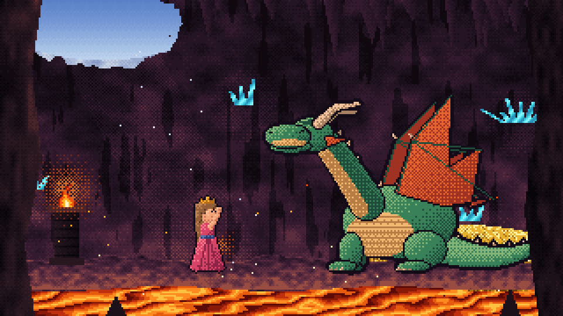
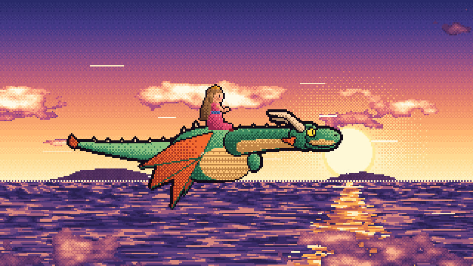
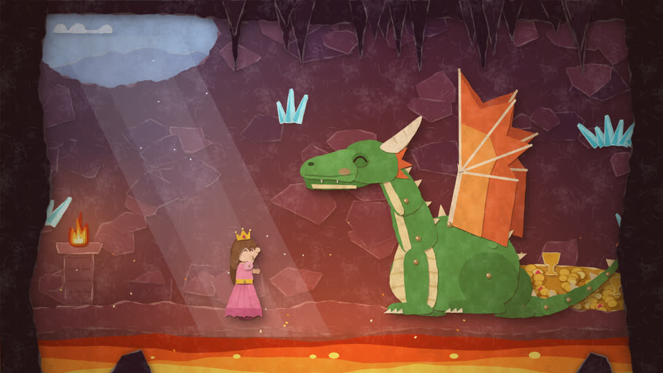
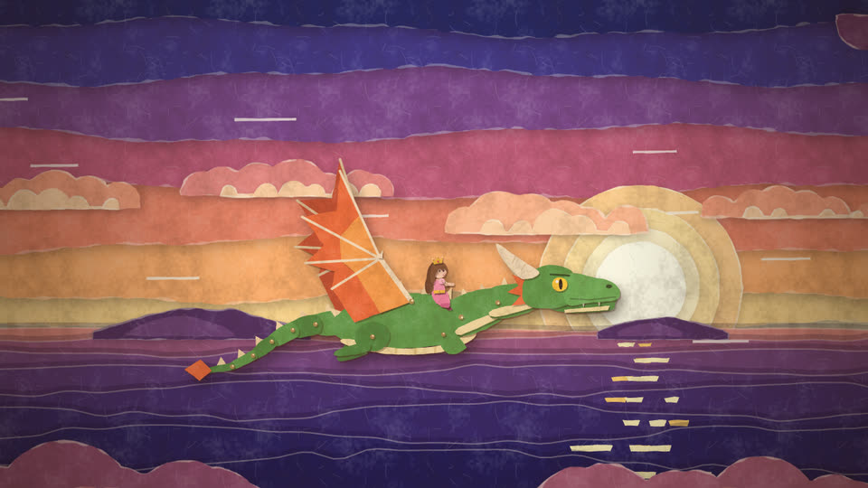
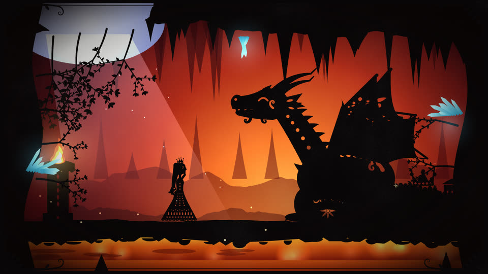
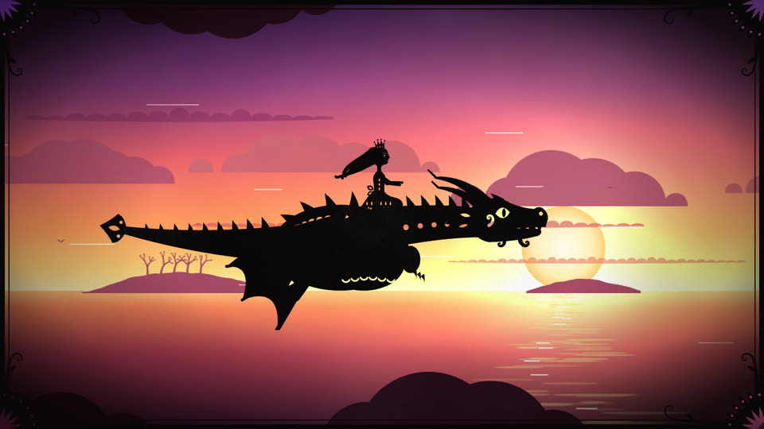

мультфильм · 2:15 · с озвучкой
Принцесса и Дракон
Одна сказка — три стиля. Выбери, как смотреть: всё нарисовано, анимировано и озвучено кодом прямо в браузере.


▶
Пиксель-арт
В духе Марка Феррари и старых игр LucasArts: экран 320×180, палитра в 256 цветов. Вода, лава и звёзды переливаются за счёт цикла палитры.


▶
Бумажная аппликация
Будто вырезано из цветной бумаги и снято покадрово: слои картона с тенями, рваные края, куклы на шарнирах, 12 рисунков в секунду.


▶
Театр теней
Как в силуэтных фильмах Лотте Райнигер: чёрные кружевные силуэты на светящихся цветных фонах, свой цвет у каждой сцены.
О сказке
Каждую ночь принцесса Нина видит огонёк на вершине горы. Однажды на рассвете она берёт фонарик и отправляется узнать, кто его зажигает…
А там, в пещере с лавой и сокровищами, живёт одинокий дракон Влад.
Как это сделано
- Каждый кадр рисуется функцией от времени на canvas: без картинок и видеофайлов.
- Музыка и звуки синтезируются в браузере через Web Audio.
- Голоса — нейросетевой синтез речи с режиссёрскими указаниями по интонации; губы двигаются в такт репликам.
- В каждом стиле есть кнопка «Скачать видео».